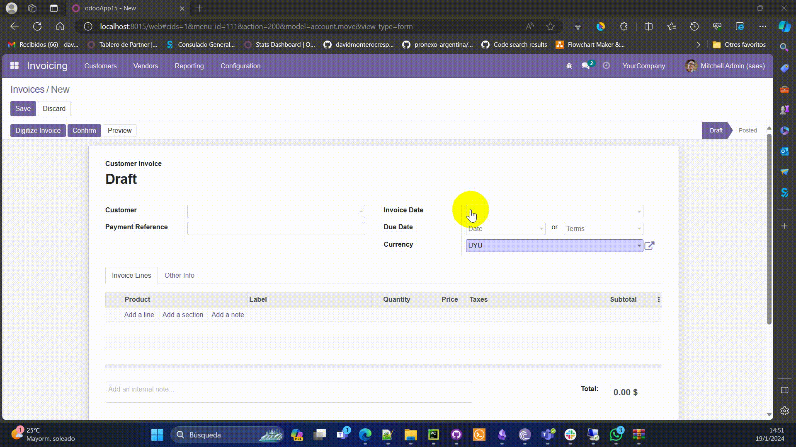

"Sale Order Digitalization" streamlines manual work by automatically adding identifiable descriptions for text fields in Odoo. It uses OCR to extract information, updates various fields, and configures different AI models. The module enhances productivity and efficiency by generating automatic responses within the Odoo social network and other applications.